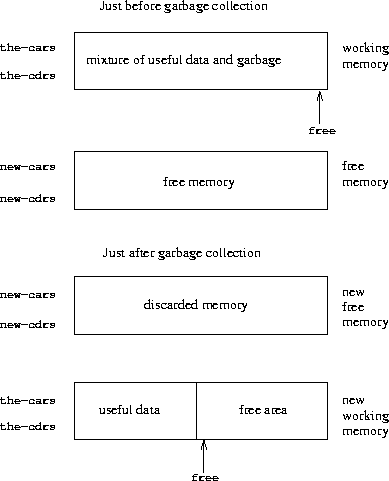

{% include JB/setup %}
{% raw %}
<div>


<a name="%_sec_5.3" id="%_sec_5.3"></a>
<h2 class="calibre23"><a href="book-Z-H-4.html#%_toc_%_sec_5.3" class="calibre19">5.3  Storage Allocation and Garbage Collection</a></h2><p class="calibre1">


<a name="%_idx_5828" id="%_idx_5828"></a><a name="%_idx_5830" id="%_idx_5830"></a>
In section <a href="book-Z-H-34.html#%_sec_5.4">5.4</a>, we will show how to implement a Scheme
evaluator as a register machine.  In order to simplify the discussion,
we will assume that our register machines can be equipped with a <em class="calibre10">list-structured memory</em>, in which the basic operations for
manipulating list-structured data are primitive.  Postulating the
existence of such a memory is a useful abstraction when one is
focusing on the mechanisms of control in a Scheme interpreter, but
this does not reflect a realistic view of the actual primitive data
operations of contemporary computers.  To obtain a more complete
picture of how a Lisp system operates, we must investigate how list
structure can be represented in a way that is compatible with
conventional computer memories.</p><p class="calibre1">

There are two considerations in implementing list structure.  The
first is purely an issue of representation: how to represent the
“box-and-pointer” structure of Lisp pairs, using only the storage
and addressing capabilities of typical computer memories.  The second
issue concerns the management of memory as a computation proceeds.
The operation of a Lisp system depends crucially on the ability to
continually create new data objects.  These include objects that are
explicitly created by the Lisp procedures being interpreted as well
as structures created by the interpreter itself, such as environments
and argument lists.  Although the constant creation of new data
objects would pose no problem on a computer with an infinite amount of
rapidly addressable memory, computer memories are available only in
finite sizes (more's the pity).  Lisp systems
thus provide an <a name="%_idx_5832" id="%_idx_5832"></a><em class="calibre10">automatic storage allocation</em> facility to
support the illusion of an infinite memory.  When a data object is no
longer needed, the memory allocated to it is automatically recycled
and used to construct new data objects.  There are various
techniques for providing such automatic storage allocation.  The
method we shall discuss in this section is called <em class="calibre10">garbage
collection</em>.</p><p class="calibre1">

<a name="%_sec_5.3.1" id="%_sec_5.3.1"></a>
</p><h3 class="calibre26"><a href="book-Z-H-4.html#%_toc_%_sec_5.3.1" class="calibre19">5.3.1  Memory as Vectors</a></h3><p class="calibre1">

</p><p class="calibre1">

A conventional computer memory can be thought of as an array of
cubbyholes, each of which can contain a piece of information.  Each
cubbyhole has a unique name, called its <a name="%_idx_5834" id="%_idx_5834"></a><em class="calibre10">address</em> or <a name="%_idx_5836" id="%_idx_5836"></a><em class="calibre10">location</em>.  Typical memory systems provide two primitive operations:
one that fetches the data stored in a specified location and one that
assigns new data to a specified location.  Memory addresses can be
incremented to support sequential access to some set of the
cubbyholes.  More generally, many important data operations require
that memory addresses be treated as data, which can be stored in
memory locations and manipulated in machine registers.  The
representation of list structure is one application of such <a name="%_idx_5838" id="%_idx_5838"></a><a name="%_idx_5840" id="%_idx_5840"></a><em class="calibre10">address arithmetic</em>.</p><p class="calibre1">

To model computer memory, we use a new kind of data
structure called a <a name="%_idx_5842" id="%_idx_5842"></a><em class="calibre10">vector</em>.  Abstractly, a vector is a compound
data object whose individual elements can be accessed by means of an
integer index in an amount of time that is independent of the
index.<a name="call_footnote_Temp_744" href="#footnote_Temp_744" id="call_footnote_Temp_744"><sup class="calibre18"><small class="calibre15">5</small></sup></a> In order to describe memory operations, we use two
primitive Scheme procedures for manipulating vectors:</p><p class="calibre1">

</p><p class="calibre1"></p><ul class="calibre24"><a name="%_idx_5844" id="%_idx_5844"></a><a name="%_idx_5846" id="%_idx_5846"></a><li class="calibre25"><tt class="calibre16">(vector-ref &lt;<em class="calibre10">vector</em>&gt; &lt;<em class="calibre10">n</em>&gt;)</tt> returns the <em class="calibre10">n</em>th
element of the vector.<p class="calibre1">

<a name="%_idx_5848" id="%_idx_5848"></a><a name="%_idx_5850" id="%_idx_5850"></a></p></li><li class="calibre25"><tt class="calibre16">(vector-set! &lt;<em class="calibre10">vector</em>&gt; &lt;<em class="calibre10">n</em>&gt; &lt;<em class="calibre10">value</em>&gt;)</tt> sets
the <em class="calibre10">n</em>th element of the vector to the designated value.
</li></ul><p class="calibre1">
For example, if <tt class="calibre16">v</tt> is a vector, then <tt class="calibre16">(vector-ref v 5)</tt> gets
the fifth entry in the vector <tt class="calibre16">v</tt> and <tt class="calibre16">(vector-set! v 5 7)</tt>
changes the value of the fifth entry of the vector <tt class="calibre16">v</tt> to 7.<a name="call_footnote_Temp_745" href="#footnote_Temp_745" id="call_footnote_Temp_745"><sup class="calibre18"><small class="calibre15">6</small></sup></a>
For computer memory, this access can be implemented
through the use of address arithmetic to combine a <em class="calibre10">base address</em>
that specifies the beginning location of a vector in memory with an
<em class="calibre10">index</em> that specifies the offset of a particular element of the vector.</p><p class="calibre1">

<a name="%_sec_Temp_746" id="%_sec_Temp_746"></a>
</p><h4 class="calibre20"><a href="book-Z-H-4.html#%_toc_%_sec_Temp_746">Representing Lisp data</a></h4><p class="calibre1">

<a name="%_idx_5852" id="%_idx_5852"></a><a name="%_idx_5854" id="%_idx_5854"></a>
We can use vectors to implement the basic pair structures required for
a list-structured memory.  Let us imagine that computer memory is
divided into two vectors: <a name="%_idx_5856" id="%_idx_5856"></a><tt class="calibre16">the-cars</tt> and <a name="%_idx_5858" id="%_idx_5858"></a><tt class="calibre16">the-cdrs</tt>.  We will
represent list structure as follows: A pointer to a pair is an index
into the two vectors.  The <tt class="calibre16">car</tt> of the pair is the entry in <tt class="calibre16">the-cars</tt> with the designated index, and the <tt class="calibre16">cdr</tt> of the pair is
the entry in <tt class="calibre16">the-cdrs</tt> with the designated index.  We also need a
representation for objects other than pairs (such as numbers and
symbols) and a way to distinguish one kind of data from another.
There are many methods of accomplishing this, but they all reduce to
using <a name="%_idx_5860" id="%_idx_5860"></a><a name="%_idx_5862" id="%_idx_5862"></a><em class="calibre10">typed pointers</em>, that is, to extending the notion of
“pointer” to include information on data type.<a name="call_footnote_Temp_747" href="#footnote_Temp_747" id="call_footnote_Temp_747"><sup class="calibre18"><small class="calibre15">7</small></sup></a> The data type enables the system to
distinguish a pointer to a pair (which consists of the “pair” data
type and an index into the memory vectors) from pointers to other
kinds of data (which consist of some other data type and whatever is
being used to represent data of that type).  Two data objects are
<a name="%_idx_5868" id="%_idx_5868"></a>considered to be the same (<tt class="calibre16">eq?</tt>) if their pointers are
identical.<a name="call_footnote_Temp_748" href="#footnote_Temp_748" id="call_footnote_Temp_748"><sup class="calibre18"><small class="calibre15">8</small></sup></a> Figure <a href="#%_fig_5.14">5.14</a>
illustrates the use of this method to represent the list <tt class="calibre16">((1 2) 3
4)</tt>, whose box-and-pointer diagram is also shown.  We use letter
prefixes to denote the data-type information.  Thus, a pointer to the
pair with index 5 is denoted <tt class="calibre16">p5</tt>, the empty list is denoted by
the pointer <tt class="calibre16">e0</tt>, and a pointer to the number 4 is denoted <tt class="calibre16">n4</tt>.  In the box-and-pointer diagram, we have indicated at the lower
left of each pair the vector index that specifies where the <tt class="calibre16">car</tt>
and <tt class="calibre16">cdr</tt> of the pair are stored.  The blank locations in <tt class="calibre16">the-cars</tt> and <tt class="calibre16">the-cdrs</tt> may contain parts of other list
structures (not of interest here).</p><p class="calibre1">

<a name="%_fig_5.14" id="%_fig_5.14"></a></p><p class="calibre1"></p><div class="calibre4"><table width="100%" class="calibre6"><tr class="calibre7"><td class="calibre8"></td></tr><caption class="calibre29"><div class="calibre4"><b class="calibre9">Figure 5.14:</b>  Box-and-pointer and memory-vector representations
of the list <tt class="calibre16">((1 2) 3 4)</tt>.</div></caption><tr class="calibre7"><td class="calibre8">

</td></tr></table></div><p class="calibre1">                                                         </p><p class="calibre1">

A pointer to a number, such as <tt class="calibre16">n4</tt>,
might consist of a type indicating numeric data together with the
actual representation of the number 4.<a name="call_footnote_Temp_749" href="#footnote_Temp_749" id="call_footnote_Temp_749"><sup class="calibre18"><small class="calibre15">9</small></sup></a>
To deal with numbers that are too large to
be represented in the fixed amount of space allocated for a single
pointer, we could use a distinct <a name="%_idx_5880" id="%_idx_5880"></a><em class="calibre10">bignum</em> data type, for which the
pointer designates a list in which the parts of the number are
stored.<a name="call_footnote_Temp_750" href="#footnote_Temp_750" id="call_footnote_Temp_750"><sup class="calibre18"><small class="calibre15">10</small></sup></a></p><p class="calibre1">


<a name="%_idx_5882" id="%_idx_5882"></a>A symbol might be represented as a typed pointer that designates a
sequence of the characters that form the symbol's printed representation.
This sequence is constructed by the Lisp reader when the character string
is initially encountered in input.  Since we want two instances of a
symbol to be recognized as the “same” symbol by <tt class="calibre16">eq?</tt> and we
<a name="%_idx_5884" id="%_idx_5884"></a>want <tt class="calibre16">eq?</tt> to be a simple test for equality of pointers, we must
ensure that if the reader sees the same character string twice, it
will use the same pointer (to the same sequence of characters) to
represent both occurrences.  To accomplish this, the reader maintains
a table, traditionally called the <a name="%_idx_5886" id="%_idx_5886"></a><em class="calibre10">obarray</em>, of all the symbols it
has ever encountered.  When the reader encounters a character string
and is about to construct a symbol, it checks the obarray to see if it
has ever before seen the same character string.  If it has not, it
uses the characters to construct a new symbol (a typed pointer to a
new character sequence) and enters this pointer in the obarray.  If the
reader has seen the string before, it returns the symbol pointer
stored in the obarray.  This process of replacing character strings by
unique pointers is called <a name="%_idx_5888" id="%_idx_5888"></a><a name="%_idx_5890" id="%_idx_5890"></a><em class="calibre10">interning</em> symbols.</p><p class="calibre1">


<a name="%_sec_Temp_751" id="%_sec_Temp_751"></a>
</p><h4 class="calibre20"><a href="book-Z-H-4.html#%_toc_%_sec_Temp_751">Implementing the primitive list operations</a></h4><p class="calibre1">

</p><p class="calibre1">

<a name="%_idx_5892" id="%_idx_5892"></a><a name="%_idx_5894" id="%_idx_5894"></a>Given the above representation scheme, we can replace each
“primitive” list operation of a register machine with one or more
primitive vector operations.  We will use two registers, <tt class="calibre16">the-cars</tt> and <tt class="calibre16">the-cdrs</tt>, to identify the memory vectors, and will
assume that <tt class="calibre16">vector-ref</tt> and <tt class="calibre16">vector-set!</tt> are available as
primitive operations.  We also assume that numeric operations on
pointers (such as incrementing a pointer, using a pair pointer to
index a vector, or adding two numbers) use only the index portion of
the typed pointer.</p><p class="calibre1">

For example, we can make a register machine support the instructions</p><p class="calibre1">

<a name="%_idx_5896" id="%_idx_5896"></a><a name="%_idx_5898" id="%_idx_5898"></a>
</p><p class="calibre1"></p><p class="calibre1"><tt class="calibre16">(assign &lt;<em class="calibre10">reg<sub class="calibre30">1</sub></em>&gt; (op car) (reg &lt;<em class="calibre10">reg<sub class="calibre30">2</sub></em>&gt;))<br class="calibre5"/><br class="calibre5"/>
(assign &lt;<em class="calibre10">reg<sub class="calibre30">1</sub></em>&gt; (op cdr) (reg &lt;<em class="calibre10">reg<sub class="calibre30">2</sub></em>&gt;))<br class="calibre5"/></tt></p><p class="calibre1"></p><p class="calibre1">
if we implement these, respectively, as</p><p class="calibre1">


</p><p class="calibre1"></p><p class="calibre1"><tt class="calibre16">(assign &lt;<em class="calibre10">reg<sub class="calibre30">1</sub></em>&gt; (op vector-ref) (reg the-cars) (reg &lt;<em class="calibre10">reg<sub class="calibre30">2</sub></em>&gt;))<br class="calibre5"/><br class="calibre5"/>
(assign &lt;<em class="calibre10">reg<sub class="calibre30">1</sub></em>&gt; (op vector-ref) (reg the-cdrs) (reg &lt;<em class="calibre10">reg<sub class="calibre30">2</sub></em>&gt;))<br class="calibre5"/></tt></p><p class="calibre1"></p><p class="calibre1">
The instructions</p><p class="calibre1">

<a name="%_idx_5900" id="%_idx_5900"></a><a name="%_idx_5902" id="%_idx_5902"></a>
</p><p class="calibre1"></p><p class="calibre1"><tt class="calibre16">(perform (op set-car!) (reg &lt;<em class="calibre10">reg<sub class="calibre30">1</sub></em>&gt;) (reg &lt;<em class="calibre10">reg<sub class="calibre30">2</sub></em>&gt;))<br class="calibre5"/><br class="calibre5"/>
(perform (op set-cdr!) (reg &lt;<em class="calibre10">reg<sub class="calibre30">1</sub></em>&gt;) (reg &lt;<em class="calibre10">reg<sub class="calibre30">2</sub></em>&gt;))<br class="calibre5"/></tt></p><p class="calibre1"></p><p class="calibre1">
are implemented as

</p><p class="calibre1"></p><p class="calibre1"><tt class="calibre16">(perform<br class="calibre5"/>
 (op vector-set!) (reg the-cars) (reg &lt;<em class="calibre10">reg<sub class="calibre30">1</sub></em>&gt;) (reg &lt;<em class="calibre10">reg<sub class="calibre30">2</sub></em>&gt;))<br class="calibre5"/><br class="calibre5"/>
(perform<br class="calibre5"/>
 (op vector-set!) (reg the-cdrs) (reg &lt;<em class="calibre10">reg<sub class="calibre30">1</sub></em>&gt;) (reg &lt;<em class="calibre10">reg<sub class="calibre30">2</sub></em>&gt;))<br class="calibre5"/></tt></p><p class="calibre1"></p><p class="calibre1">
</p><p class="calibre1">

<a name="%_idx_5904" id="%_idx_5904"></a><tt class="calibre16">Cons</tt> is performed by allocating an unused index and storing the
arguments to <tt class="calibre16">cons</tt> in <tt class="calibre16">the-cars</tt> and <tt class="calibre16">the-cdrs</tt> at that
indexed vector position.  We presume that there is a special register,
<a name="%_idx_5906" id="%_idx_5906"></a><tt class="calibre16">free</tt>, that always holds a pair pointer containing the next
available index, and that we can increment the index part of that
pointer to find the next free location.<a name="call_footnote_Temp_752" href="#footnote_Temp_752" id="call_footnote_Temp_752"><sup class="calibre18"><small class="calibre15">11</small></sup></a>
For example, the instruction</p><p class="calibre1">

</p><p class="calibre1"></p><p class="calibre1"><tt class="calibre16">(assign &lt;<em class="calibre10">reg<sub class="calibre30">1</sub></em>&gt; (op cons) (reg &lt;<em class="calibre10">reg<sub class="calibre30">2</sub></em>&gt;) (reg &lt;<em class="calibre10">reg<sub class="calibre30">3</sub></em>&gt;))<br class="calibre5"/></tt></p><p class="calibre1"></p><p class="calibre1">
is implemented as the following sequence of vector
operations:<a name="call_footnote_Temp_753" href="#footnote_Temp_753" id="call_footnote_Temp_753"><sup class="calibre18"><small class="calibre15">12</small></sup></a></p><p class="calibre1">

</p><p class="calibre1"></p><p class="calibre1"><tt class="calibre16">(perform<br class="calibre5"/>
 (op vector-set!) (reg the-cars) (reg free) (reg &lt;<em class="calibre10">reg<sub class="calibre30">2</sub></em>&gt;))<br class="calibre5"/>
(perform<br class="calibre5"/>
 (op vector-set!) (reg the-cdrs) (reg free) (reg &lt;<em class="calibre10">reg<sub class="calibre30">3</sub></em>&gt;))<br class="calibre5"/>
(assign &lt;<em class="calibre10">reg<sub class="calibre30">1</sub></em>&gt; (reg free))<br class="calibre5"/>
(assign free (op +) (reg free) (const 1))<br class="calibre5"/></tt></p><p class="calibre1"></p><p class="calibre1">
The <tt class="calibre16">eq?</tt> operation</p><p class="calibre1">

</p><p class="calibre1"></p><p class="calibre1"><tt class="calibre16">(op eq?) (reg &lt;<em class="calibre10">reg<sub class="calibre30">1</sub></em>&gt;) (reg &lt;<em class="calibre10">reg<sub class="calibre30">2</sub></em>&gt;)<br class="calibre5"/></tt></p><p class="calibre1"></p><p class="calibre1">
simply tests the equality of all fields in the registers, and
<a name="%_idx_5910" id="%_idx_5910"></a><a name="%_idx_5912" id="%_idx_5912"></a><a name="%_idx_5914" id="%_idx_5914"></a><a name="%_idx_5916" id="%_idx_5916"></a>predicates such as <tt class="calibre16">pair?</tt>, <tt class="calibre16">null?</tt>, <tt class="calibre16">symbol?</tt>, and <tt class="calibre16">number?</tt> need only check the type field.</p><p class="calibre1">

<a name="%_sec_Temp_754" id="%_sec_Temp_754"></a>
</p><h4 class="calibre20"><a href="book-Z-H-4.html#%_toc_%_sec_Temp_754">Implementing stacks</a></h4><p class="calibre1">

<a name="%_idx_5918" id="%_idx_5918"></a>
Although our register machines use stacks, we need do nothing special
here, since stacks can be modeled in terms of lists.  The stack can be
a list of the saved values, pointed to by a special register <tt class="calibre16">the-stack</tt>.  Thus, <tt class="calibre16">(save &lt;<em class="calibre10">reg</em>&gt;)</tt> can be implemented as</p><p class="calibre1">

<a name="%_idx_5920" id="%_idx_5920"></a></p><p class="calibre1"></p><p class="calibre1"><tt class="calibre16">(assign the-stack (op cons) (reg &lt;<em class="calibre10">reg</em>&gt;) (reg the-stack))<br class="calibre5"/></tt></p><p class="calibre1"></p><p class="calibre1">
<a name="%_idx_5922" id="%_idx_5922"></a>Similarly, <tt class="calibre16">(restore &lt;<em class="calibre10">reg</em>&gt;)</tt> can be implemented as
</p><p class="calibre1"></p><p class="calibre1"><tt class="calibre16">(assign &lt;<em class="calibre10">reg</em>&gt; (op car) (reg the-stack))<br class="calibre5"/>
(assign the-stack (op cdr) (reg the-stack))<br class="calibre5"/></tt></p><p class="calibre1"></p><p class="calibre1">
and <tt class="calibre16">(perform (op initialize-stack))</tt> can be implemented as
</p><p class="calibre1"></p><p class="calibre1"><tt class="calibre16">(assign the-stack (const ()))<br class="calibre5"/></tt></p><p class="calibre1"></p><p class="calibre1">
These operations can be further expanded in terms of the vector
operations given above.  In conventional computer architectures,
however, it is usually advantageous to allocate the stack as a
separate vector.  Then pushing and popping the stack can be
accomplished by incrementing or decrementing an index into that
vector.</p><p class="calibre1">

</p><p class="calibre1"><a name="%_thm_5.20" id="%_thm_5.20"></a>
<b class="calibre9">Exercise 5.20.</b>  Draw the box-and-pointer representation and the memory-vector
representation (as in figure <a href="#%_fig_5.14">5.14</a>) of the
list structure produced by</p><p class="calibre1">

</p><p class="calibre1"></p><p class="calibre1"><tt class="calibre16">(define x (cons 1 2))<br class="calibre5"/>
(define y (list x x))<br class="calibre5"/></tt></p><p class="calibre1"></p><p class="calibre1">
with the <tt class="calibre16">free</tt> pointer initially <tt class="calibre16">p1</tt>.  What is the final
value of <tt class="calibre16">free</tt> ?  What pointers represent the values of <tt class="calibre16">x</tt> and <tt class="calibre16">y</tt> ?
</p><p class="calibre1"></p><p class="calibre1">

</p><p class="calibre1"><a name="%_thm_5.21" id="%_thm_5.21"></a>
<b class="calibre9">Exercise 5.21.</b>  <a name="%_idx_5924" id="%_idx_5924"></a>Implement register machines for the following procedures.
Assume that the list-structure memory operations are available as
machine primitives.</p><p class="calibre1">

</p><p class="calibre1"></p><p class="calibre1">a. Recursive <tt class="calibre16">count-leaves</tt>:</p><p class="calibre1">

</p><p class="calibre1"></p><p class="calibre1"><tt class="calibre16">(define (count-leaves tree)<br class="calibre5"/>
  (cond ((null? tree) 0)<br class="calibre5"/>
        ((not (pair? tree)) 1)<br class="calibre5"/>
        (else (+ (count-leaves (car tree))<br class="calibre5"/>
                 (count-leaves (cdr tree))))))<br class="calibre5"/></tt></p><p class="calibre1"></p><p class="calibre1">
</p><p class="calibre1"></p><p class="calibre1">b. Recursive <tt class="calibre16">count-leaves</tt> with explicit counter:</p><p class="calibre1">

</p><p class="calibre1"></p><p class="calibre1"><tt class="calibre16">(define (count-leaves tree)<br class="calibre5"/>
  (define (count-iter tree n)<br class="calibre5"/>
    (cond ((null? tree) n)<br class="calibre5"/>
          ((not (pair? tree)) (+ n 1))<br class="calibre5"/>
          (else (count-iter (cdr tree)<br class="calibre5"/>
                            (count-iter (car tree) n)))))<br class="calibre5"/>
  (count-iter tree 0))<br class="calibre5"/></tt></p><p class="calibre1"></p><p class="calibre1">
</p><p class="calibre1"></p><p class="calibre1">

</p><p class="calibre1"><a name="%_thm_5.22" id="%_thm_5.22"></a>
<b class="calibre9">Exercise 5.22.</b>  <a name="%_idx_5926" id="%_idx_5926"></a><a name="%_idx_5928" id="%_idx_5928"></a>Exercise <a href="book-Z-H-22.html#%_thm_3.12">3.12</a> of section <a href="book-Z-H-22.html#%_sec_3.3.1">3.3.1</a>
presented an <tt class="calibre16">append</tt> procedure that appends two lists to form a
new list and an <tt class="calibre16">append!</tt> procedure that splices two lists
together.  Design a register machine to implement each of these
procedures.  Assume that the list-structure memory operations are
available as primitive operations.
</p><p class="calibre1">

<a name="%_sec_5.3.2" id="%_sec_5.3.2"></a>
</p><h3 class="calibre26"><a href="book-Z-H-4.html#%_toc_%_sec_5.3.2" class="calibre19">5.3.2  Maintaining the Illusion of Infinite Memory</a></h3><p class="calibre1">

<a name="%_idx_5930" id="%_idx_5930"></a></p><p class="calibre1">

The representation method outlined in
section <a href="#%_sec_5.3.1">5.3.1</a> solves the problem of implementing
list structure, provided that we have an infinite amount of memory.
With a real computer we will eventually run out of free space in which
to construct new pairs.<a name="call_footnote_Temp_758" href="#footnote_Temp_758" id="call_footnote_Temp_758"><sup class="calibre18"><small class="calibre15">13</small></sup></a>
However, most of the pairs generated in a typical
computation are used only to hold intermediate results.  After these
results are accessed, the pairs are no longer needed – they are <em class="calibre10">garbage</em>.  For instance, the computation</p><p class="calibre1">

</p><p class="calibre1"></p><p class="calibre1"><tt class="calibre16">(accumulate + 0 (filter odd? (enumerate-interval 0 n)))<br class="calibre5"/></tt></p><p class="calibre1"></p><p class="calibre1">
constructs two lists: the enumeration and the result of filtering
the enumeration.  When the accumulation is complete, these lists are
no longer needed, and the allocated memory can be reclaimed.  If we
can arrange to collect all the garbage periodically, and if this turns
out to recycle memory at about the same rate at which we construct new
pairs, we will have preserved the illusion that there is an infinite
amount of memory.</p><p class="calibre1">

In order to recycle pairs, we must have a way to determine which
allocated pairs are not needed (in the sense that their contents can
no longer influence the future of the computation).  The method we
shall examine for accomplishing this is known as <em class="calibre10">garbage
collection</em>.  Garbage collection is based on the observation that, at
any moment in a Lisp interpretation, the only objects that can
affect the future of the computation are those that can be reached by
some succession of <tt class="calibre16">car</tt> and <tt class="calibre16">cdr</tt> operations starting from
the pointers that are currently in the machine registers.<a name="call_footnote_Temp_759" href="#footnote_Temp_759" id="call_footnote_Temp_759"><sup class="calibre18"><small class="calibre15">14</small></sup></a>  Any memory cell
that is not so accessible may be recycled.</p><p class="calibre1">

There are many ways to perform garbage collection.  The method we
shall examine here is called <a name="%_idx_5932" id="%_idx_5932"></a><a name="%_idx_5934" id="%_idx_5934"></a><em class="calibre10">stop-and-copy</em>.  The basic idea is
to divide memory into two halves: “working memory” and “free
memory.”  When <tt class="calibre16">cons</tt> constructs pairs, it allocates these in
working memory.  When working memory is full, we perform garbage
collection by locating all the useful pairs in working memory and
copying these into consecutive locations in free memory.  (The useful
pairs are located by tracing all the <tt class="calibre16">car</tt> and <tt class="calibre16">cdr</tt> pointers,
starting with the machine registers.)  Since we do not copy the
garbage, there will presumably be additional free memory that we can
use to allocate new pairs.  In addition, nothing in the working memory
is needed, since all the useful pairs in it have been copied.  Thus,
if we interchange the roles of working memory and free memory, we can
continue processing; new pairs will be allocated in the new working
memory (which was the old free memory).  When this is full, we can
copy the useful pairs into the new free memory (which was the old
working memory).<a name="call_footnote_Temp_760" href="#footnote_Temp_760" id="call_footnote_Temp_760"><sup class="calibre18"><small class="calibre15">15</small></sup></a></p><p class="calibre1">

<a name="%_sec_Temp_761" id="%_sec_Temp_761"></a>
</p><h4 class="calibre20"><a href="book-Z-H-4.html#%_toc_%_sec_Temp_761">Implementation of a stop-and-copy garbage collector</a></h4><p class="calibre1">

We now use our register-machine language to describe the stop-and-copy
algorithm in more detail.  We will assume that there is a register
called <a name="%_idx_5966" id="%_idx_5966"></a><tt class="calibre16">root</tt> that contains a pointer to a structure that
eventually points at all accessible data.  This can be arranged by
storing the contents of all the machine registers in a
pre-allocated list pointed at by <tt class="calibre16">root</tt> just before starting
garbage collection.<a name="call_footnote_Temp_762" href="#footnote_Temp_762" id="call_footnote_Temp_762"><sup class="calibre18"><small class="calibre15">16</small></sup></a> We also assume that, in addition to the
current working memory, there is free memory available into which we
can copy the useful data.  The current working memory consists of
vectors whose base addresses are in <a name="%_idx_5968" id="%_idx_5968"></a><a name="%_idx_5970" id="%_idx_5970"></a>registers called <tt class="calibre16">the-cars</tt>
and <tt class="calibre16">the-cdrs</tt>, and the free memory is in registers called <a name="%_idx_5972" id="%_idx_5972"></a><a name="%_idx_5974" id="%_idx_5974"></a><tt class="calibre16">new-cars</tt> and <tt class="calibre16">new-cdrs</tt>.</p><p class="calibre1">

Garbage collection is triggered when we exhaust the free cells in the
current working memory, that is, when a <tt class="calibre16">cons</tt> operation attempts
to increment the <tt class="calibre16">free</tt> pointer beyond the end of the memory
vector.  When the garbage-collection process is complete, the <tt class="calibre16">root</tt> pointer will point into the new memory, all objects accessible
from the <tt class="calibre16">root</tt> will have been moved to the new memory, and the
<tt class="calibre16">free</tt> pointer will indicate the next place in the new memory
where a new pair can be allocated.  In addition, the roles of working
memory and new memory will have been interchanged – new pairs will be
constructed in the new memory, beginning at the place indicated by
<tt class="calibre16">free</tt>, and the (previous) working memory will be available as the
new memory for the next garbage collection.
Figure <a href="#%_fig_5.15">5.15</a> shows the arrangement of memory just
before and just after garbage collection.</p><p class="calibre1">

<a name="%_fig_5.15" id="%_fig_5.15"></a></p><p class="calibre1"></p><div class="calibre4"><table width="100%" class="calibre6"><tr class="calibre7"><td class="calibre8"></td></tr><caption class="calibre29"><div class="calibre4"><b class="calibre9">Figure 5.15:</b>  Reconfiguration of memory by the garbage-collection
process.</div></caption><tr class="calibre7"><td class="calibre8">

</td></tr></table></div><p class="calibre1"></p><p class="calibre1">

<a name="%_idx_5976" id="%_idx_5976"></a><a name="%_idx_5978" id="%_idx_5978"></a>The state of the garbage-collection process is controlled by
maintaining two pointers: <tt class="calibre16">free</tt> and <tt class="calibre16">scan</tt>.  These are
initialized to point to the beginning of the new memory.  The
algorithm begins by relocating the pair pointed at by <tt class="calibre16">root</tt> to
the beginning of the new memory.  The pair is copied, the <tt class="calibre16">root</tt>
pointer is adjusted to point to the new location, and the <tt class="calibre16">free</tt>
pointer is incremented.  In addition, the old location of the pair is
marked to show that its contents have been moved.  This marking is
done as follows: In the <tt class="calibre16">car</tt> position, we place a special tag
that signals that this is an already-moved object.  (Such an object is
traditionally called a <a name="%_idx_5980" id="%_idx_5980"></a><em class="calibre10">broken heart</em>.)<a name="call_footnote_Temp_763" href="#footnote_Temp_763" id="call_footnote_Temp_763"><sup class="calibre18"><small class="calibre15">17</small></sup></a>  In the <tt class="calibre16">cdr</tt> position we place a <a name="%_idx_5988" id="%_idx_5988"></a><em class="calibre10">forwarding
address</em> that points at the location to which the object has been
moved.</p><p class="calibre1">


After relocating the root, the garbage collector enters its basic
cycle.  At each step in the algorithm, the <tt class="calibre16">scan</tt> pointer
(initially pointing at the relocated root) points at a pair that has
been moved to the new memory but whose <tt class="calibre16">car</tt> and <tt class="calibre16">cdr</tt>
pointers still refer to objects in the old memory.  These objects are
each relocated, and the <tt class="calibre16">scan</tt> pointer is incremented.  To
relocate an object (for example, the object indicated by the <tt class="calibre16">car</tt>
pointer of the pair we are scanning) we check to see if the object has
already been moved (as indicated by the presence of a broken-heart tag
in the <tt class="calibre16">car</tt> position of the object).  If the object has not
already been moved, we copy it to the place indicated by <tt class="calibre16">free</tt>,
update <tt class="calibre16">free</tt>, set up a broken heart at the object's old location,
and update the pointer to the object (in this
example, the <tt class="calibre16">car</tt> pointer of the pair we are scanning) to point
to the new location.  If the object has already been moved, its
forwarding address (found in the <tt class="calibre16">cdr</tt> position of the broken
heart) is substituted for the pointer in the pair being scanned.
Eventually, all accessible objects will have been moved and scanned,
at which point the <tt class="calibre16">scan</tt> pointer will overtake the <tt class="calibre16">free</tt>
pointer and the process will terminate.</p><p class="calibre1">

</p><p class="calibre1">

We can specify the stop-and-copy algorithm as a sequence of
instructions for a register
machine.  The basic step of relocating an object is accomplished by a
subroutine called <tt class="calibre16">relocate-old-result-in-new</tt>.  This
subroutine gets its argument, a pointer to the object to be relocated,
from a register named <a name="%_idx_5990" id="%_idx_5990"></a><tt class="calibre16">old</tt>.  It relocates the designated object
(incrementing <tt class="calibre16">free</tt> in the process),
puts a pointer to the relocated object into a register called <a name="%_idx_5992" id="%_idx_5992"></a><tt class="calibre16">new</tt>, and returns by branching to the entry point stored in the register
<tt class="calibre16">relocate-continue</tt>.  To begin garbage collection, we invoke this
subroutine to relocate the <tt class="calibre16">root</tt> pointer, after initializing <tt class="calibre16">free</tt> and <tt class="calibre16">scan</tt>.  When the relocation of <tt class="calibre16">root</tt> has been
accomplished, we install the new pointer as the new <tt class="calibre16">root</tt> and
enter the main loop of the garbage collector.</p><p class="calibre1">

</p><p class="calibre1"></p><p class="calibre1"><tt class="calibre16">begin-garbage-collection<br class="calibre5"/>
  (assign free (const 0))<br class="calibre5"/>
  (assign scan (const 0))<br class="calibre5"/>
  (assign old (reg root))<br class="calibre5"/>
  (assign relocate-continue (label reassign-root))<br class="calibre5"/>
  (goto (label relocate-old-result-in-new))<br class="calibre5"/>
reassign-root<br class="calibre5"/>
  (assign root (reg new))<br class="calibre5"/>
  (goto (label gc-loop))<br class="calibre5"/></tt></p><p class="calibre1"></p><p class="calibre1"></p><p class="calibre1">

In the main loop of the garbage collector we must determine whether
there are any more objects to be scanned.  We do this by testing
whether the <tt class="calibre16">scan</tt> pointer is coincident with the <tt class="calibre16">free</tt>
pointer.  If the pointers are equal, then all accessible objects have
been relocated, and we branch to <tt class="calibre16">gc-flip</tt>, which cleans things up
so that we can continue the interrupted computation.  If there are
still pairs to be scanned, we call the relocate subroutine to relocate
the <tt class="calibre16">car</tt> of the next pair (by placing the <tt class="calibre16">car</tt> pointer in <tt class="calibre16">old</tt>).  The <tt class="calibre16">relocate-continue</tt> register is set up so that the
subroutine will return to update the <tt class="calibre16">car</tt> pointer.</p><p class="calibre1">

</p><p class="calibre1"></p><p class="calibre1"><tt class="calibre16">gc-loop<br class="calibre5"/>
  (test (op =) (reg scan) (reg free))<br class="calibre5"/>
  (branch (label gc-flip))<br class="calibre5"/>
  (assign old (op vector-ref) (reg new-cars) (reg scan))<br class="calibre5"/>
  (assign relocate-continue (label update-car))<br class="calibre5"/>
  (goto (label relocate-old-result-in-new))<br class="calibre5"/></tt></p><p class="calibre1"></p><p class="calibre1"></p><p class="calibre1">

</p><p class="calibre1">

At <tt class="calibre16">update-car</tt>, we modify the <tt class="calibre16">car</tt> pointer of the pair being
scanned, then proceed to relocate the <tt class="calibre16">cdr</tt> of the pair.  We
return to <tt class="calibre16">update-cdr</tt> when that relocation has been accomplished.
After relocating and updating the <tt class="calibre16">cdr</tt>, we are finished scanning
that pair, so we continue with the main loop.</p><p class="calibre1">

</p><p class="calibre1"></p><p class="calibre1"><tt class="calibre16">update-car<br class="calibre5"/>
  (perform<br class="calibre5"/>
   (op vector-set!) (reg new-cars) (reg scan) (reg new))<br class="calibre5"/>
  (assign old (op vector-ref) (reg new-cdrs) (reg scan))<br class="calibre5"/>
  (assign relocate-continue (label update-cdr))<br class="calibre5"/>
  (goto (label relocate-old-result-in-new))<br class="calibre5"/><br class="calibre5"/>
update-cdr<br class="calibre5"/>
  (perform<br class="calibre5"/>
   (op vector-set!) (reg new-cdrs) (reg scan) (reg new))<br class="calibre5"/>
  (assign scan (op +) (reg scan) (const 1))<br class="calibre5"/>
  (goto (label gc-loop))<br class="calibre5"/></tt></p><p class="calibre1"></p><p class="calibre1"></p><p class="calibre1">

The subroutine <tt class="calibre16">relocate-old-result-in-new</tt> relocates objects as
follows: If the object to be relocated (pointed at by <tt class="calibre16">old</tt>) is
not a pair, then we return the same pointer to the object unchanged
(in <tt class="calibre16">new</tt>).  (For example, we may be scanning a pair whose <tt class="calibre16">car</tt> is the number 4.  If we represent the <tt class="calibre16">car</tt> by <tt class="calibre16">n4</tt>, as
described in section <a href="#%_sec_5.3.1">5.3.1</a>, then we want the
“relocated” <tt class="calibre16">car</tt> pointer to still be <tt class="calibre16">n4</tt>.)  Otherwise, we
must perform the relocation.  If the <tt class="calibre16">car</tt> position of the pair to
be relocated contains a broken-heart tag, then the pair has in fact
already been moved, so we retrieve the forwarding address (from the
<tt class="calibre16">cdr</tt> position of the broken heart) and return this in <tt class="calibre16">new</tt>.
If the pointer in <tt class="calibre16">old</tt> points at a yet-unmoved pair, then we move
the pair to the first free cell in new memory (pointed at by <tt class="calibre16">free</tt>) and set up the broken heart by storing a broken-heart tag and
forwarding address at the old location.
<tt class="calibre16">Relocate-old-result-in-new</tt> uses a register <a name="%_idx_5994" id="%_idx_5994"></a><tt class="calibre16">oldcr</tt>
to hold the <tt class="calibre16">car</tt> or the <tt class="calibre16">cdr</tt> of the object pointed at by
<tt class="calibre16">old</tt>.<a name="call_footnote_Temp_764" href="#footnote_Temp_764" id="call_footnote_Temp_764"><sup class="calibre18"><small class="calibre15">18</small></sup></a></p><p class="calibre1">

</p><p class="calibre1"></p><p class="calibre1"><tt class="calibre16">relocate-old-result-in-new<br class="calibre5"/>
  (test (op pointer-to-pair?) (reg old))<br class="calibre5"/>
  (branch (label pair))<br class="calibre5"/>
  (assign new (reg old))<br class="calibre5"/>
  (goto (reg relocate-continue))<br class="calibre5"/>
pair<br class="calibre5"/>
  (assign oldcr (op vector-ref) (reg the-cars) (reg old))<br class="calibre5"/>
  (test (op broken-heart?) (reg oldcr))<br class="calibre5"/>
  (branch (label already-moved))<br class="calibre5"/>
  (assign new (reg free)) <em class="calibre10">; new location for pair</em><br class="calibre5"/>
  <em class="calibre10">;; Update <tt class="calibre16">free</tt> pointer.</em><br class="calibre5"/>
  (assign free (op +) (reg free) (const 1))<br class="calibre5"/>
  <em class="calibre10">;; Copy the <tt class="calibre16">car</tt> and <tt class="calibre16">cdr</tt> to new memory.</em><br class="calibre5"/>
  (perform (op vector-set!)<br class="calibre5"/>
           (reg new-cars) (reg new) (reg oldcr))<br class="calibre5"/>
  (assign oldcr (op vector-ref) (reg the-cdrs) (reg old))<br class="calibre5"/>
  (perform (op vector-set!)<br class="calibre5"/>
           (reg new-cdrs) (reg new) (reg oldcr))<br class="calibre5"/>
  <em class="calibre10">;; Construct the broken heart.</em><br class="calibre5"/>
  (perform (op vector-set!)<br class="calibre5"/>
           (reg the-cars) (reg old) (const broken-heart))<br class="calibre5"/>
  (perform<br class="calibre5"/>
   (op vector-set!) (reg the-cdrs) (reg old) (reg new))<br class="calibre5"/>
  (goto (reg relocate-continue))<br class="calibre5"/>
already-moved<br class="calibre5"/>
  (assign new (op vector-ref) (reg the-cdrs) (reg old))<br class="calibre5"/>
  (goto (reg relocate-continue))<br class="calibre5"/></tt></p><p class="calibre1"></p><p class="calibre1"></p><p class="calibre1">

At the very end of the garbage-collection process, we interchange the
role of old and new memories by interchanging pointers: interchanging
<tt class="calibre16">the-cars</tt> with <tt class="calibre16">new-cars</tt>, and <tt class="calibre16">the-cdrs</tt> with <tt class="calibre16">new-cdrs</tt>.  We will then be ready to perform another garbage
collection the next time memory runs out.</p><p class="calibre1">

</p><p class="calibre1"></p><p class="calibre1"><tt class="calibre16">gc-flip<br class="calibre5"/>
  (assign temp (reg the-cdrs))<br class="calibre5"/>
  (assign the-cdrs (reg new-cdrs))<br class="calibre5"/>
  (assign new-cdrs (reg temp))<br class="calibre5"/>
  (assign temp (reg the-cars))<br class="calibre5"/>
  (assign the-cars (reg new-cars))<br class="calibre5"/>
  (assign new-cars (reg temp))<br class="calibre5"/></tt></p><p class="calibre1"></p><p class="calibre1">

</p><p class="calibre1">

</p><p class="calibre1"></p><div class="smallprint"><hr class="calibre21"/></div><p class="calibre1">
</p><div class="footnote"><p class="calibre1"><a name="footnote_Temp_744" href="#call_footnote_Temp_744" id="footnote_Temp_744"><sup class="calibre14"><small class="calibre22">5</small></sup></a> We could represent memory as lists of items.
However, the access time would then not be independent of the index,
since accessing the <em class="calibre10">n</em>th element of a list requires <em class="calibre10">n</em> - 1 <tt class="calibre16">cdr</tt>
operations.

</p><p class="calibre1"><a name="footnote_Temp_745" href="#call_footnote_Temp_745" id="footnote_Temp_745"><sup class="calibre14"><small class="calibre22">6</small></sup></a> For completeness, we should specify a <tt class="calibre16">make-vector</tt>
operation that constructs vectors.  However, in the present
application we will use vectors only to model fixed divisions of the
computer memory.

</p><p class="calibre1"><a name="footnote_Temp_747" href="#call_footnote_Temp_747" id="footnote_Temp_747"><sup class="calibre14"><small class="calibre22">7</small></sup></a> This is
precisely the same <a name="%_idx_5864" id="%_idx_5864"></a><a name="%_idx_5866" id="%_idx_5866"></a>“tagged data” idea we introduced in chapter 2 for
dealing with generic operations.  Here, however, the data types are
included at the primitive machine level rather than constructed
through the use of lists.

</p><p class="calibre1"><a name="footnote_Temp_748" href="#call_footnote_Temp_748" id="footnote_Temp_748"><sup class="calibre14"><small class="calibre22">8</small></sup></a> Type information may be encoded in a variety of
ways, depending on the details of the machine on which the Lisp
system is to be implemented.  The execution efficiency of Lisp
programs will be strongly dependent on how cleverly this choice is
made, but it is difficult to formulate general design rules for good
choices.  The most straightforward way to implement typed pointers is
to allocate a fixed set of bits in each pointer to be a <a name="%_idx_5870" id="%_idx_5870"></a><em class="calibre10">type
field</em> that encodes the data type.  Important questions to be
addressed in designing such a representation include the following:
How many type bits are required?  How large must the vector indices
be?  How efficiently can the primitive machine instructions be used to
manipulate the type fields of pointers?  Machines that include special
hardware for the efficient handling of type fields are said to have
<a name="%_idx_5872" id="%_idx_5872"></a><em class="calibre10">tagged architectures</em>.

</p><p class="calibre1"><a name="footnote_Temp_749" href="#call_footnote_Temp_749" id="footnote_Temp_749"><sup class="calibre14"><small class="calibre22">9</small></sup></a> This decision on the
<a name="%_idx_5874" id="%_idx_5874"></a><a name="%_idx_5876" id="%_idx_5876"></a><a name="%_idx_5878" id="%_idx_5878"></a>representation of numbers determines whether <tt class="calibre16">eq?</tt>, which tests
equality of pointers, can be used to test for equality of numbers.  If
the pointer contains the number itself, then equal numbers will have
the same pointer.  But if the pointer contains the index of a location
where the number is stored, equal numbers will be guaranteed to have
equal pointers only if we are careful never to store the same number
in more than one location.

</p><p class="calibre1"><a name="footnote_Temp_750" href="#call_footnote_Temp_750" id="footnote_Temp_750"><sup class="calibre14"><small class="calibre22">10</small></sup></a> This is just like writing a number as a sequence of
digits, except that each “digit” is a number between 0 and the
largest number that can be stored in a single pointer.

</p><p class="calibre1"><a name="footnote_Temp_752" href="#call_footnote_Temp_752" id="footnote_Temp_752"><sup class="calibre14"><small class="calibre22">11</small></sup></a> There are other ways
of finding free storage.  For example, we could link together all the
unused pairs into a <a name="%_idx_5908" id="%_idx_5908"></a><em class="calibre10">free list</em>.  Our free locations are
consecutive (and hence can be accessed by incrementing a pointer)
because we are using a compacting garbage collector, as we will see in
section <a href="#%_sec_5.3.2">5.3.2</a>.

</p><p class="calibre1"><a name="footnote_Temp_753" href="#call_footnote_Temp_753" id="footnote_Temp_753"><sup class="calibre14"><small class="calibre22">12</small></sup></a> This is essentially the implementation of <tt class="calibre16">cons</tt> in terms of <tt class="calibre16">set-car!</tt> and <tt class="calibre16">set-cdr!</tt>, as described in
section <a href="book-Z-H-22.html#%_sec_3.3.1">3.3.1</a>.  The operation <tt class="calibre16">get-new-pair</tt> used in that implementation is realized here by the <tt class="calibre16">free</tt> pointer.

</p><p class="calibre1"><a name="footnote_Temp_758" href="#call_footnote_Temp_758" id="footnote_Temp_758"><sup class="calibre14"><small class="calibre22">13</small></sup></a> This may not be true eventually,
because memories may get large enough so that it would be impossible
to run out of free memory in the lifetime of the computer.  For
example, there are about 3× 10<sup class="calibre14">13</sup>, microseconds in a year, so
if we were to <tt class="calibre16">cons</tt> once per microsecond we would need about
10<sup class="calibre14">15</sup> cells of memory to build a machine that could operate for 30
years without running out of memory.  That much memory seems absurdly
large by today's standards, but it is not physically impossible.  On
the other hand, processors are getting faster and a future computer
may have large numbers of processors operating in parallel on a single
memory, so it may be possible to use up memory much faster than we
have postulated.

</p><p class="calibre1"><a name="footnote_Temp_759" href="#call_footnote_Temp_759" id="footnote_Temp_759"><sup class="calibre14"><small class="calibre22">14</small></sup></a> We
assume here that the stack is represented as a list as described in
section <a href="#%_sec_5.3.1">5.3.1</a>, so that items on the stack are
accessible via the pointer in the stack register.

</p><p class="calibre1"><a name="footnote_Temp_760" href="#call_footnote_Temp_760" id="footnote_Temp_760"><sup class="calibre14"><small class="calibre22">15</small></sup></a> This idea was invented and first implemented
<a name="%_idx_5936" id="%_idx_5936"></a>by Minsky, as part of the implementation of <a name="%_idx_5938" id="%_idx_5938"></a>Lisp for the PDP-1 at the
<a name="%_idx_5940" id="%_idx_5940"></a>MIT Research Laboratory of Electronics.  It was further developed by
<a name="%_idx_5942" id="%_idx_5942"></a><a name="%_idx_5944" id="%_idx_5944"></a>Fenichel and Yochelson (1969) for use in the Lisp implementation for
<a name="%_idx_5946" id="%_idx_5946"></a>the Multics time-sharing system.  Later, <a name="%_idx_5948" id="%_idx_5948"></a>Baker (1978) developed a
“real-time” version of the method, which does not require the
computation to stop during garbage collection.  Baker's idea was
extended by <a name="%_idx_5950" id="%_idx_5950"></a><a name="%_idx_5952" id="%_idx_5952"></a><a name="%_idx_5954" id="%_idx_5954"></a>Hewitt, Lieberman, and Moon (see Lieberman and Hewitt
1983) to take advantage of the fact that some structure is more volatile
and other structure is more permanent.  </p><p class="calibre1">

An alternative commonly used garbage-collection technique is the <a name="%_idx_5956" id="%_idx_5956"></a><a name="%_idx_5958" id="%_idx_5958"></a><em class="calibre10">mark-sweep</em> method.  This consists of tracing all the structure
accessible from the machine registers and marking each pair we reach.
We then scan all of memory, and any location that is unmarked is
“swept up” as garbage and made available for reuse.  A full
<a name="%_idx_5960" id="%_idx_5960"></a>discussion of the mark-sweep method can be found in Allen 1978.</p><p class="calibre1">

The Minsky-Fenichel-Yochelson algorithm is the dominant algorithm in
use for large-memory systems because it examines only the useful part
of memory.  This is in contrast to mark-sweep, in which the sweep
phase must check all of memory.  A second advantage of stop-and-copy
is that it is a <a name="%_idx_5962" id="%_idx_5962"></a><a name="%_idx_5964" id="%_idx_5964"></a><em class="calibre10">compacting</em> garbage collector.  That is, at the
end of the garbage-collection phase the useful data will have been
moved to consecutive memory locations, with all garbage pairs
compressed out.  This can be an extremely important performance
consideration in machines with virtual memory, in which accesses to
widely separated memory addresses may require extra paging
operations.

</p><p class="calibre1"><a name="footnote_Temp_762" href="#call_footnote_Temp_762" id="footnote_Temp_762"><sup class="calibre14"><small class="calibre22">16</small></sup></a> This list of registers does not include
the registers used by the storage-allocation system – <tt class="calibre16">root</tt>, <tt class="calibre16">the-cars</tt>, <tt class="calibre16">the-cdrs</tt>, and the other registers that will be
introduced in this section.

</p><p class="calibre1"><a name="footnote_Temp_763" href="#call_footnote_Temp_763" id="footnote_Temp_763"><sup class="calibre14"><small class="calibre22">17</small></sup></a> The term <em class="calibre10"><a name="%_idx_5982" id="%_idx_5982"></a>broken heart</em> was coined by David Cressey, who wrote a garbage
collector for <a name="%_idx_5984" id="%_idx_5984"></a><a name="%_idx_5986" id="%_idx_5986"></a>MDL, a dialect of Lisp developed at MIT during the early
1970s.

</p><p class="calibre1"><a name="footnote_Temp_764" href="#call_footnote_Temp_764" id="footnote_Temp_764"><sup class="calibre14"><small class="calibre22">18</small></sup></a> The garbage collector uses the low-level predicate
<tt class="calibre16">pointer-to-pair?</tt> instead of the list-structure <tt class="calibre16">pair?</tt>
operation because in a real system there might be various things
that are treated as pairs for garbage-collection purposes.
For example, in a Scheme system that conforms to the IEEE standard
a procedure object may be implemented as a special kind of “pair”
that doesn't satisfy the <tt class="calibre16">pair?</tt> predicate.
For simulation purposes, <tt class="calibre16">pointer-to-pair?</tt> can be implemented as
<tt class="calibre16">pair?</tt>.

</p></div>


</div>

{% endraw %}

